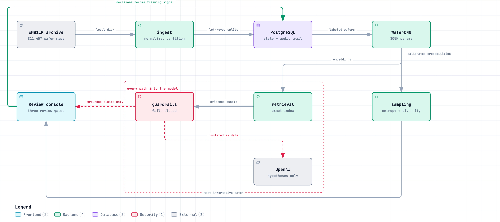
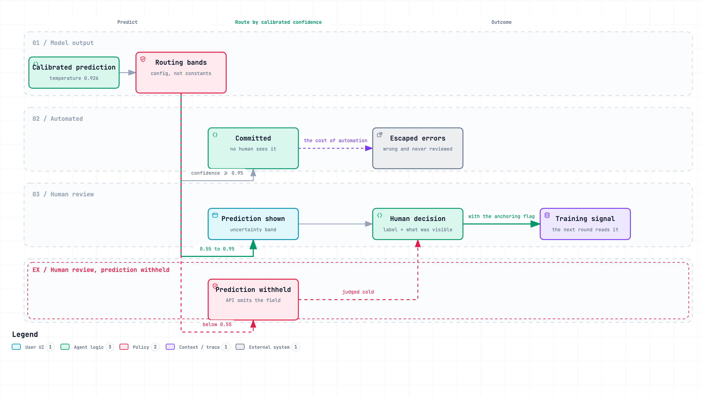
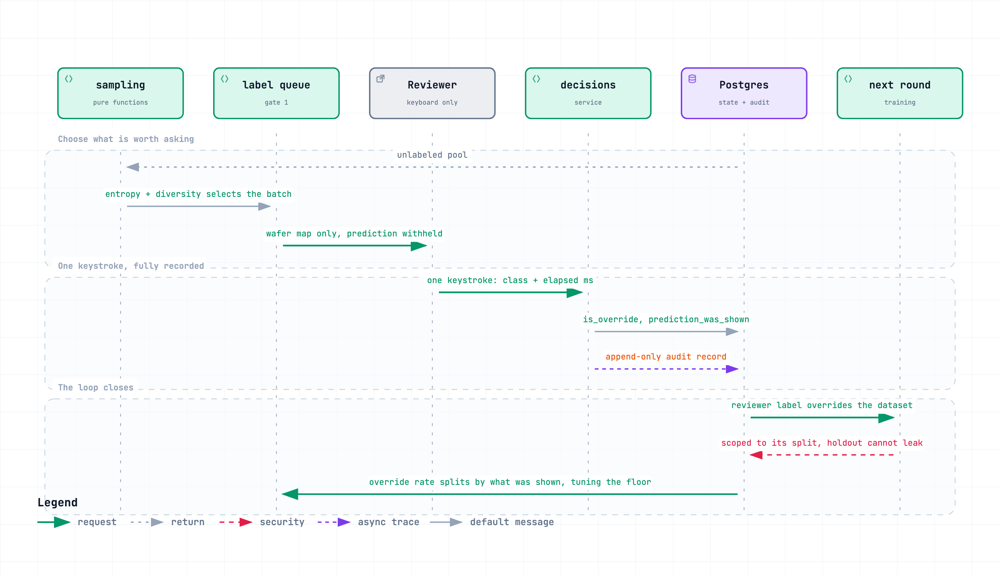
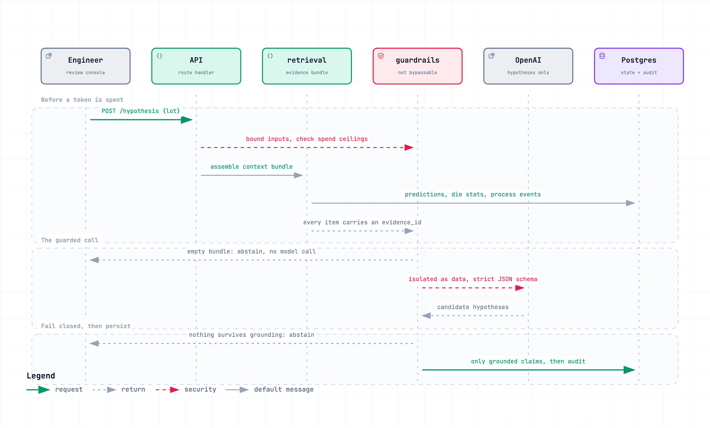

yieldloop — system diagrams
A wafer map defect triage console with a human decision loop, active learning, and a root cause agent that cannot cite evidence it was not given.
Every figure on this page is measured from the running system, not estimated. Each diagram below is also available as an interactive page with light and dark themes, pan and zoom, search, and relationship tracing.
01 Architecture
How the pieces fit. Three things this shows that a file listing cannot: the classifier and the language model are separate paths and no wafer map ever reaches OpenAI; the guardrails sit between retrieval and the model on both sides, so there is no edge into it that skips them; and the arrow back from the console into Postgres is the loop closing, because those decisions are what the next training round reads.

02 Routing bands
What automation costs, and who is allowed to see the model's guess. Above the auto-commit threshold the system commits without a human. Inside the uncertainty band a reviewer sees the prediction. Below the confidence floor the prediction is withheld — the API omits the field rather than the client hiding it — because a weak guess anchors a reviewer rather than helping them, and agreement bought that way is the model's own error laundered back in as a human label.

Both thresholds are configuration, not constants. That is what lets the evaluation harness sweep them to draw the tradeoff curve, and every change is recorded with who made it and why.
03 The human loop, closing
The name is literal. Active learning chooses which unlabeled wafers are worth a human's time, the reviewer answers in one keystroke with the model's guess hidden, and the answer returns as training signal: a reviewer label overrides the dataset's own, a newly labeled wafer becomes a training example, and the wafer leaves the unlabeled pool. Decisions are scoped to their split, so a holdout decision can never leak into training.

There are two return paths, not one. Corrections retrain the model. Separately, because every decision records what the reviewer could see, the override rate splits two ways — and if people disagree far more when the prediction is hidden, the visible predictions are buying agreement rather than earning it, and the confidence floor should rise.
04 A guarded hypothesis request
The ordering is the design. Inputs are bounded and spend is checked before a token is spent. Untrusted text is isolated as data while the prompt is built, so it never reaches the instruction layer. Parsing and grounding both run before anything is persisted, so an ungrounded claim never becomes a database row. An empty evidence bundle abstains without calling the model at all, because paying for a call that cannot possibly be grounded is pure waste.

Abstention is an answer, not an error. If no claim survives grounding, the console renders "insufficient evidence" with the reason and the gaps named. A blank panel reads as a broken feature and trains reviewers to ignore the screen.